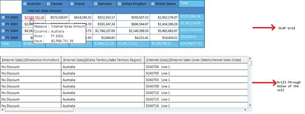

OlapGrid for Silverlight supports Drill-through feature which enables the user to drill through any value and see the fact data which formed the value.
Use Case Scenarios
Drill-through is an important functionality, which is really helpful in situations where the user would like to see the fact data which results in the given value.
Method
Table 8: Method/s Table
|
Method |
Description |
Parameters |
Type |
Return Type |
Reference links |
|
Execute |
This method should be called to get the result set of Drill -through operation. This should be called in the LinkLabel click event. When this method is invoked by passing the drill through query, then it initiates an Async Callback and gets the result set which has the fact data. |
(<string> query)
|
- |
void |
- |
Adding Drill Through to an Application
Adding Drill-through functionality to an application is described in the following steps:
1. Enabling the Hyperlink for Value cells for OlapGrid.
2. Tagging and Using LinkClick Event.
a) Get the CellDescriptor
b) Form Drill-through query
c) Execute the Query
d) Tag the CellSetChanged event of the OlapDataManager
3. Binding the data source to GridDataControl.
Enabling the Hyperlink for Value cells for OlapGrid
To enable the hyperlink for the Value Cells for OlapGird, use the following code snippet inside the OlapGrid’s loaded event.
|
[C#]
void olapGrid_Loaded(object sender, RoutedEventArgs e) { // Enabling Hyperlink this.olapGrid.InternalGrid.ValueCellStyle.IsHyperlinkCell = true; }
|
|
[VB]
Private Sub olapGrid_Loaded(ByVal sender As Object, ByVal e As RoutedEventArgs) ' Enabling Hyperlink Me.olapGrid.InternalGrid.ValueCellStyle.IsHyperlinkCell = True End Sub
|
Tagging and Using LinkClick Event
We need to tag the OlapGrid’s LinkClick event, which occurs when the cell has hyperlink enabled.
In order to initiate the Drill-through operation, we need to tag the LinkClick event, in the LinkClick event, the LinkLabelEventArgs will contain a CellDescriptor, which will have the necessary information to form the query. As a first step, we have to make a call to PivotEngine’s GetCellData method passing this CellDescriptor, which will return us the CellData.
We can use the CellData to identify the selected(Clicked) cell by using the ColumnInfo, RowInfo and Measure. We have to form the drill-through query one such shown in the following code snippet and pass it on to the OlapDataManager’s “Execute” method. This method will initiate an Async operation which will hit the OlapCube or OlapServer for getting the fact table details.
|
[C#]
private void olapGrid_LinkClick(object sender, Syncfusion.Silverlight.Grid.Olap.LinkLabelEventArgs e) { // Getting Cell descriptor. var cellData = this.olapGrid.OlapDataManager.PivotEngine.GetCellData(e.CellDescriptor);
// Forming query using details from cell descriptor. If Categorical or series axis contains more than one elements, the ColumnInfo or RowInfo should be iterated and included in the query separated by comma. var query = "drillthrough Select { " + cellData.ColumnInfo[0].UniqueName + "} on 0, " + cellData.RowInfo[0].UniqueName + " on 1 from [Adventure Works] Where [" + cellData.Measure + "]";
// Executing the drill-through operation. olapDataManager.Execute(query);
// Tagging the Data Manager's Cell Changed Event. this.olapDataManager.CellSetChanged += new CellSetChangedEventHandler(olapDataManager_CellSetChanged); }
|
|
[VB]
Private Sub olapGrid_LinkClick(ByVal sender As Object, ByVal e As Syncfusion.Silverlight.Grid.Olap.LinkLabelEventArgs) ' Getting Cell descriptor. Dim cellData = Me.olapGrid.OlapDataManager.PivotEngine.GetCellData(e.CellDescriptor)
' Forming query using details from cell descriptor. If Categorical or series axis contains more than one elements, the ColumnInfo or RowInfo should be iterated and included in the query separated by comma. Dim query = "drillthrough Select { " & cellData.ColumnInfo(0).UniqueName & "} on 0, " & cellData.RowInfo(0).UniqueName & " on 1 from [Adventure Works] Where [" & cellData.Measure & "]"
' Executing the drill-through operation. olapDataManager.Execute(query)
' Tagging the Data Manager's Cell Changed Event. AddHandler olapDataManager.CellSetChanged, AddressOf olapDataManager_CellSetChanged End Sub
|
Binding the DataSource
Once the Async operation is completed, the CellSetChanged event will be fired providing a ResultSet ,a collection of ExpandoObject which contains the fact table. Since, Syncfusion DataGrid supports dynamic collection binding support, bind this to the GridDataControl’s ItemsSource property as shown in the following code snippet:
|
[C#]
void olapDataManager_CellSetChanged(object sender, CellSetChangedEventArgs e) { this.dataGrid1.ItemsSource = e.ResultSet; }
|
|
[VB]
Private Sub olapDataManager_CellSetChanged(ByVal sender As Object, ByVal e As CellSetChangedEventArgs) Me.dataGrid1.ItemsSource = e.ResultSet End Sub
|

Figure 14: A Simple OlapGrid and it's Drill-Through data
Sample Link
A sample demo is available at the following link:
1. Open the Syncfusion Dashboard
2. Select Business Intelligence
3. Click the Silverlight drop-down list and select Explore Samples
4. Navigate to OlapGrid.Silverlight-> Drill-Through
Before submitting this content to the documentation team, make sure Fields 1-4 and Field 7 have been filled out. Do not delete this page.